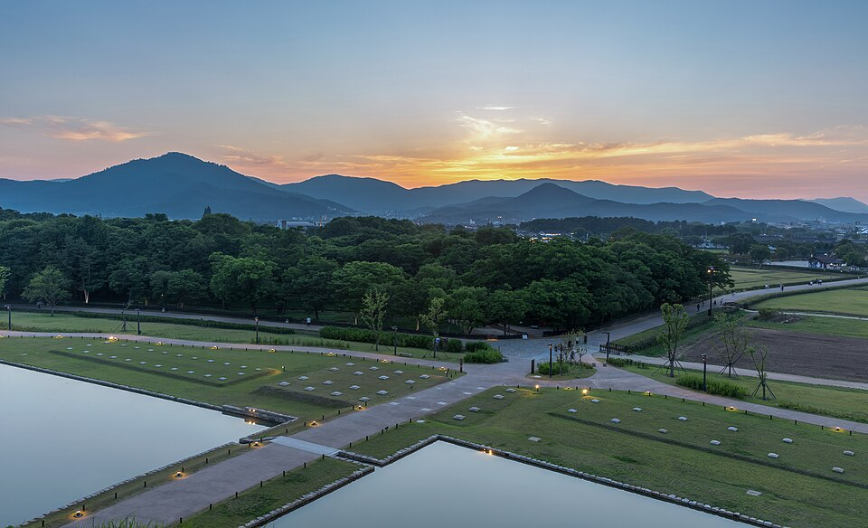

Обновлено 06.10 в 20:40 по Корее. Уже посмотрел и убрано: храм Haedong Yonggungsa, Blueline, восточный край Haeundae. Погода AccuWeather на 06.10: вт-чт солнце, 24-25°, дождя нет; пт днём солнце, ночью возможна гроза. Часы работы: Kakao Map на 06.10. Такси: Naver Maps 06.10 (обычный трафик). Поезда: SRT/Korail 06.10. Отель: Fairfield Songdo, 113 Songdohaebyeon-ro (для такси 부산 서구 송도해변로 113), +82 51 260 0000.
Google Maps в Корее строит маршрут только на транспорте, на машине и пешком нет. Для дороги жми Naver.
Что сделать, пока в Бусане
1. Отель в Tokyo с 09.10 не забронирован. Прилёт в Narita в пт 18:15. Адрес отеля нужен и для Visit Japan Web. Шорт-лист от 05.10: Daiwa Roynet Nishi-Shinjuku PREMIER. Нужно решить: 5 или 6 ночей.
2. Visit Japan Web (иммиграция и таможня, QR) заполнить до вылета 09.10. Сделано или нет, я не знаю.
3. Поезд в Gyeongju на ср 07.10 не куплен. На 11:00 06.10 места есть на все поезда, 10 100 ₩. Купить в приложении Korail или на вокзале.
4. Ресепшен: спросить, можно ли 09.10 оставить вещи после выезда в 11:00 или выехать попозже.
5. Рейс KE2131: авторегистрация оформлена 28.09. Посадочный должен прийти на почту примерно за 24 часа, в чт 08.10 около 16:00. Проверить.
6. Marriott Challenge: ждём ответ FoundersCard в info.msam.
Ср 07.10 · Gyeongju без храмов (решаешь: ехать или нет)
☀ 24°, дождя нет · закат 18:00 · столица древнего царства Силла, ~33 мин на KTX
Поезда (места есть на все, проверено 06.10 в 11:00): туда Busan → Gyeongju 07:22, 08:39, 08:59, 09:49, 10:06, 10:33, 10:54 (28-35 мин, 10 100 ₩); обратно 16:07, 16:38, 18:23, 18:31, 18:55, 19:13, 19:30, 19:37, 19:56, 20:32, 20:40, 21:21. Билеты в приложении Korail или на вокзале. Отель → Busan Station: такси 21 мин, ~10 100 ₩.
Станция Gyeongju далеко от всего: автобусом до Bulguksa ~1 час. Внутри Gyeongju ездить на такси.
Что там: курганы, улица кафе, пруд дворца на закате
Поезд 10:06 или 10:33 → такси в центр → курганы, обед на Hwangnidan-gil, обсерватория, мост → Wolji к закату 18:00 → поезд 19:56, 20:32 или 20:40.

центрDaereungwon
Парк с огромными травяными курганами-гробницами царей Силла прямо в центре города, между ними гуляешь пешком. Рядом улица кафе Hwangnidan-gil. 09:00-22:00, вход до 21:30 (Kakao).
Павильоны дворца отражаются в пруду, главный вид Gyeongju в сумерки. 09:00-22:00, вход до 21:30 (Kakao 06.10), билет 3 000 ₩ (цена на 28.09). Приходи к закату.
Мыс на краю острова Yeongdo: скальные обрывы, маяк, сосновый парк. ⚠ Прогулочный поезд Danubi стоит с 03.07.2026 после второй аварии за год, в августе объявили полный пересмотр (новости Newsis, Nate). Вместо поезда ходит бесплатный шаттл, Kakao показывает 09:20-17:30, последнее подтверждение в новостях от августа, на месте сверить. Пешком по кругу 1,5-2 часа. Берег закрывают 21:00-05:00.
Лесистый мыс на западном конце пляжа Haeundae. Прибрежная тропа ~950 м через сосны над скалами: подвесной мост, маяк, статуя русалки, Nurimaru APEC House (внутрь 09:00-17:00). Тропа открыта круглосуточно, на круг ~1 час. Закат 17:59 смотри с маяка: солнце садится за мост Gwangan.
🚕 Gwangalli → отель: 27 мин, ~15 700 ₩ + 1 400 ₩. Таксисту: 부산 서구 송도해변로 113
Пт 09.10 · утро и вылет
☀ 25° днём, ночью возможна гроза (55%, уже после вылета) · рейс KE2131 16:00 из Gimhae в Токио
поздний завтракJagalchi Market
Главный рыбный рынок Кореи: внизу ряды с живой рыбой, наверху выбранную рыбу готовят. 05:00-22:00 (Kakao), в пятницу открыт. От отеля 10 минут на такси, ~6 100 ₩.
Кабинки идут над заливом с пляжа Songdo на мыс Amnam. 09:00-21:00 (Kakao, 06.10). Туда-обратно: Crystal (прозрачный пол) 24 000 ₩, обычная 19 000 ₩ (цены с сайта на 05.10). Лучше всего на закат: 06.10 закат 18:02, 07.10 18:00, 08.10 17:59.